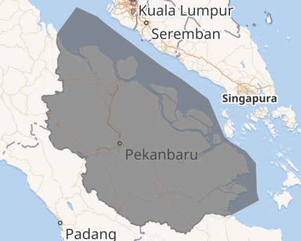
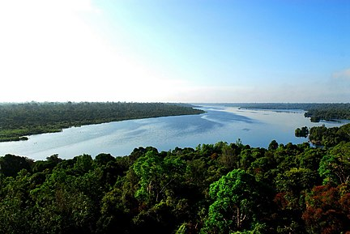

Riau adalah sebuah provinsi di Indonesia yang terletak di bagian tengah pantai timur pulau Sumatra. Wilayah pesisirnya berbatasan dengan Selat Malaka. Hingga tahun 2004, provinsi ini juga meliputi Kepulauan Riau, sekelompok besar pulau-pulau kecil (pulau-pulau utamanya antara lain Pulau Batam dan Pulau Bintan) yang terletak di sebelah Timur Sumatra dan sebelah Selatan Singapura. Kepulauan ini dimekarkan menjadi provinsi tersendiri pada Juli 2004. Ibu kota dan kota terbesar Riau adalah Pekanbaru, dan kota besar lainnya adalah kota Dumai

Negara
Indonesia
Provinsi
Riau
Hari Jadi
09 Agustus 1957
Gubernur
Drs. H. Syamsuar M.Si.
Wakil Gubernur
H. Edy Afrizal Natar Nasution, S.IP
Luas Total
87.023,66 km2
Populasi Total
6.493.603
Kepadatan
75/km2
Sejarah

Riau merupakan penggabungan dari kerajaan Melayu yang pernah berjaya di wilayah ini, yaitu Kerajaan Indragiri
(1658-1838), Kerajaan Siak Sri Indrapura (1723-1858), Kerajaan Pelalawan (1530-1879), Kerajaan Riau-Lingga
(1824-1913) dan beberapa kerajaan kecil lainnya, seperti Tambusai, Rantau Binuang Sakti, Rambah, Kampar dan Kandis.
Pembangunan Provinsi Riau telah disusun melalui Undang-undang darurat No. 19 tahun 1957 yang kemudian disahkan
sebagai Undang-undang No.61 tahun 1958.Provinsi Riau dibangun cukup lama dengan usaha yang keras dalam kurun waktu 6
tahun 17 November 1952 s / d 5 Maret 1958).
Kuliner Khas
Menikmati suatu makanan khas dari suatu daerah tentulah sangat nikmat, apalagi jika Anda mencicipinya langsung di kota asalnya. Memang seperti yang Anda ketahui jika negara Indonesia, sangat kaya akan ragam kulinernya yang mampu menghipnotis dan juga memanjakan lidah siapa saja, Termasuk juga Anda. Nah salah satu kuliner yang wajib untuk Anda coba adalah makanan khas Riau. Maka berikut makanan dan minuman khas Riau yang tidak boleh untuk Anda lewatkan. :
Gulai Ikan Patin
Ikan Baung Asam Pedas
Nasi Lemak
Miso
Sop Tunjang
Mie Sagu
Roti Jala
Cincalok
Kue Lasidah
Minuman Air Mata Pengantin
Es Lancang Kuning
Es Laksamana Mengamuk
Es Sirup Mak Inang
Jus Melayu
Jus Telaga Tiga Warna
Tempat Wisata Pantai
ALibur lebaran sebentar lagi, Kamu pastinya juga akan mudik ke kampung halaman kan? Buat Kamu yang ingin mudik ke Pekanbaru Riau. Kamu bisa sekalian mengunjungi destinasi wisata di Riau yang menjadi favorit para wisatawan :